전기기사 (2018-03-04 기출문제)
1과목: 전기자기학
1. 평면도체 표면에서 r[m]의 거리에 점전하 Q[C]이 있을 때 이 전하를 무한원까지 운반하는데 필요한 일은 몇 J 인가?
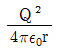
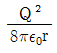
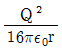
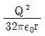
(정답률: 77%)

2. 역자성체에서 비투자율(㎲)은 어느 값을 갖는가?
- ㎲=1
- ㎲＜1
- ㎲＞1
- ㎲=0
(정답률: 86%)
3. 비유전율 Єr1, Єr2인 두 유전체가 나란히 무한평면으로 접하고 있고, 이 경계면에 평행으로 유전체의 비유전율 Єr1 내에 경계면으로부터 d[m]인 위치에 선전하 밀도 ρ[C/m]인 선상전하가 있을 때, 이 선전하와 유전체 Єr2간의 단위 길이당의 작용력은 몇 N/m인가?
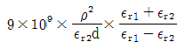
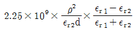
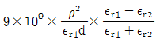
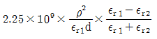
(정답률: 67%)
4. 점전하에 의한 전계는 쿨롱의 법칙을 사용하면 되지만 분포되어 있는 전하에 의한 전계를 구할 때는 무엇을 이용하는가?
- 렌츠의 법칙
- 가우스의 정리
- 라플라스 방정식
- 스토크스의 정리
(정답률: 76%)
5. 패러데이관(Faraday tube)의 성질에 대한 설명으로 틀린 것은?
- 패러데이관 중에 있는 전속수는 그 관속에 진전하가 없으면 일정하며 연속적이다.
- 패러데이관의 양단에는 양 또는 음의 단위 진전하가 존재하고 있다.
- 패러데이관 한 개의 단위 전위차 당 보유에너지는 1/2J이다.
- 패러데이관의 밀도는 전속밀도와 같지 않다.
(정답률: 81%)
6. 공기 중에 있는 지름 6㎝인 단일 도체구의 정전용량은 몇 ㎊인가?
- 0.34
- 0.67
- 3.34
- 6.71
(정답률: 63%)
7. 유전율이 Є1, Є2 [F/m]인 유전체 경계면에 단위면적당 작용하는 힘은 몇 N/m2 인가? (단, 전계가 경계면에 수직인 경우이며, 두 유전체의 전속밀도 D1=D2=D이다.)
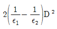
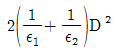
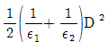
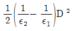
(정답률: 81%)
8. 진공 중에 균일하게 대전된 반지름 a[m]인 선전하 밀도 λl[C/m]의 원환이 있을 때, 그 중심으로부터 중심축상 x[m]의 거리에 있는 점의 전계의 세기는 몇 V/m 인가?
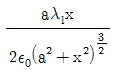
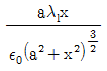
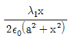
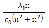
(정답률: 73%)
9. 내압 1000V 정전용량 1㎌, 내압 750V 정전용량 2㎌, 내압 500V 정전용량 5㎌인 콘덴서 3개를 직렬로 접속하고 인가전압을 서서히 높이면 최초로 파괴되는 콘덴서는?
- 1㎌
- 2㎌
- 5㎌
- 동시에 파괴된다.
(정답률: 82%)
10. 내부장치 또는 공간을 물질로 포위시켜 외부자계의 영향을 차폐시키는 방식을 자기차폐라 한다. 다음 중 자기차폐에 가장 좋은 것은?
- 비투자율이 1보다 작은 역자성체
- 강자성체 중에서 비투자율이 큰 물질
- 강자성체 중에서 비투자율이 작은 물질
- 비투자율에 관계없이 물질의 두께에만 관계되므로 되도록 두꺼운 물질
(정답률: 84%)
11. 40V/m인 전계 내의 50V되는 점에서 1C의 전하가 전계 방향으로 80㎝ 이동 하였을 때, 그 점의 전위는 몇 V 인가?
- 18
- 22
- 35
- 65
(정답률: 75%)
12. 그림과 같이 반지름 a[m]의 한번 감긴 원형코일이 균일한 자속밀도 B[Wb/m2]인 자계에 놓여 있다. 지금 코일 면을 자계와 나란하게 전류 I[A]를 흘리면 원형코일이 자계로부터 받는 회전 모멘트는 몇 Nm/rad 인가?
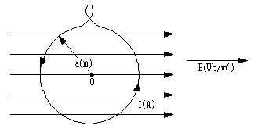
- πaBI
- 2πaBI
- πa2BI
- 2πa2BI
(정답률: 63%)
13. 다음 조건들 중 초전도체에 부합되는 것은? (단, μτ은 비투자율, Xm은 비자화율, B는 자속밀도이며 작동온도는 임계온도 이하라 한다.
- Xm=-1, μτ=0, B=0
- Xm=0, μτ=0, B=0
- Xm=1, μτ=0, B=0
- Xm=-1, μτ=1, B=0
(정답률: 60%)
14. x=0인 무한평면을 경계면으로 하여 x＜0인 영역에는 비유전율 Єr1=2, x＞0인 영역에는 Єr2=4인 유전체가 있다. Єr1인 유전체내에서 전계 E1=20ax-10ay+5azV/m 일 때 x＞0인 영역에 있는 Єr2인 유전체내에서 전속밀도 D2[C/m2]는?단, 경계면상에는 자유전하가 없다고 한다.
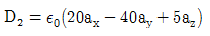
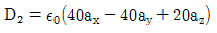
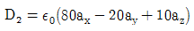
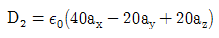
(정답률: 61%)
15. 평면파 전파가 E=30cos(109t+20z)j V/m 로 주어 졌다면 이 전자파의 위상속도는 몇 m/s 인가?
- 5×107
- 1/3×103
- 109
- 3/2
(정답률: 50%)
16. 자속밀도 10 Wb/m2 자계 중에 10㎝ 도체를 자계와 30°의 각도로 30m/s로 움직일 때, 도체에 유기되는 기전력은 몇 V 인가?
- 15
- 15√3
- 1500
- 1500√3
(정답률: 74%)
17. 그림과 같이 단면적 S=10cm2, 자로의 길이 l=20π㎝, 비투자율 ㎲=1000인 철심에 N1=N2=100인 두 코일을 감았다. 두 코일사이의 상호인덕턴스는 몇 mH 인가?
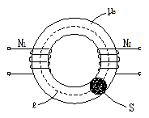
- 0.1
- 1
- 2
- 20
(정답률: 62%)
18. 1㎂의 전류가 흐르고 있을 때, 1초 동안 통과하는 전자 수는 약 몇 개 인가? (단, 전자 1개의 전하는 1.602×10-19C 이다.)
- 6.24×1010
- 6.24×1011
- 6.24×1012
- 6.24×1013
(정답률: 74%)
19. 균일하게 원형단면을 흐르는 전류 I[A]에 의한, 반지름 a[m], 길이 l[m], 비투자율 ㎲인 원통도체의 내부 인덕턴스는 몇 H 인가?
- 10-7㎲l
- 3×10-7㎲l
- 1/4a × 10-7㎲l
- 1/2 × 10-7㎲l
(정답률: 49%)
20. 한 변의 길이가 10㎝인 정사각형 회로에 직류전류 10A가 흐를 때, 정사각형의 중심에서의 자계 세기는 몇 A/m 인가?
- 100√2/π
- 200√2/π
- 300√2/π
- 400√2/π
(정답률: 77%)
2과목: 전력공학
21. 송전선에서 재폐로 방식을 사용하는 목적은?
- 역률 개선
- 안정도 증진
- 유도장해의 경감
- 코로나 발생방지
(정답률: 74%)
22. 설비용량이 360kW, 수용률 0.8, 부등률 1.2 일 때 최대수용전력은 몇 kW 인가?
- 120
- 240
- 360
- 480
(정답률: 78%)
23. 배전계통에서 사용하는 고압용 차단기의 종류가 아닌 것은?
- 기중차단기 ACB
- 공기차단기 ABB
- 진공차단기 VCB
- 유입차단기 OCB
(정답률: 63%)
24. SF6 가스차단기에 대한 설명으로 틀린 것은?
- SF6 가스 자체는 불활성 기체이다.
- SF6가스는 공기에 비하여 소호능력이 약 100배 정도이다.
- 절연거리를 적게 할 수 있어 차단기 전체를 소형, 경량화 할 수 있다.
- SF6 가스를 이용한 것으로서 독성이 있으므로 취급에 유의하여야 한다.
(정답률: 81%)
25. 송전선로의 일반회로 정수가 A=0.7, B=j190, D=0.9 일 때 C의 값은?
- -j1.95×10-3
- j1.95×10-3
- -j1.95×10-4
- j1.95×10-4
(정답률: 62%)
26. 부하역률이 0.8인 선로의 저항손실은 0.9인 선로의 저항손실에 비해서 약 몇 배 정도 되는가?
- 0.97
- 1.1
- 1.27
- 1.5
(정답률: 65%)
27. 단상변압기 3대에 의한 △결선에서 1대를 제거하고 동일전력을 V결선으로 보낸다면 동손은 약 몇 배가 되는가?(오류 신고가 접수된 문제입니다. 반드시 정답과 해설을 확인하시기 바랍니다.)
- 0.67
- 2.0
- 2.7
- 3.0
(정답률: 40%)
28. 피뢰기의 충격방전 개시전압은 무엇으로 표시하는가?
- 직류전압의 크기
- 충격파의 평균치
- 충격파의 최대치
- 충격파의 실효치
(정답률: 73%)
29. 단상 2선식 배전선로의 선로임피던스가 2+j5Ω이고 무유도성 부하전류 10A 일 때 송전단 역률은? (단, 수전단 전압의 크기는 100V이고, 위상각은 0°이다.)
- 5/12
- 5/13
- 11/12
- 12/13
(정답률: 44%)
30. 그림과 같이 전력선과 통신선 사이에 차폐선을 설치하였다. 이 경우에 통신선의 차폐계수(K)를 구하는 관계식은? 단, 차폐선을 통신선에 근접하여 설치한다.
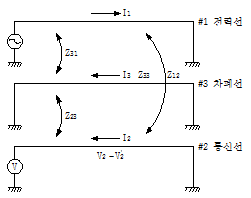
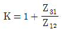
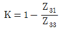
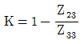
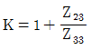
(정답률: 53%)
31. 모선 보호에 사용되는 계전방식이 아닌 것은?
- 위상 비교방식
- 선택접지 계전방식
- 방향거리 계전방식
- 전류차동 보호방식
(정답률: 51%)
32. %임피던스와 관련된 설명으로 틀린 것은?
- 정격전류가 증가하면 %임피던스는 감소한다.
- 직렬리액터가 감소하면 %임피던스도 감소한다.
- 전기기계의 %임피던스가 크면 차단기의 용량은 작아진다.
- 송전계통에서는 임피던스의 크기를 옴값대신에 %값으로 나타내는 경우가 많다.
(정답률: 49%)
33. A, B 및 C상 전류를 각각 Ia, Ib, 및 Ic라 할 때
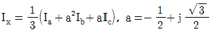
으로 표시되는 Ix는 어떤 전류인가?- 정상전류
- 역상전류
- 영상전류
- 역상전류와 영상전류의 합
(정답률: 76%)
34. 그림과 같이 “수류가 고체에 둘러싸여 있고 A로부터 유입되는 수량과 B로부터 유출되는 수량이 같다”고 하는 이론은?
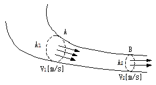
- 수두이론
- 연속의 원리
- 베르누이의 정리
- 토리첼리의 정리
(정답률: 77%)
35. 4단자 정수가 A, B, C, D인 선로에 임피던스가 1/ZT인 변압기가 수전단에 접속된 경우 계통의 4단자 정수 중 D0는?
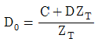
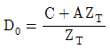
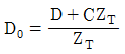
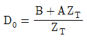
(정답률: 51%)
36. 대용량 고전압의 안정권선(△권선)이 있다. 이 권선의 설치 목적과 관계가 먼 것은?
- 고장전류 저감
- 제3고조파 제거
- 조상설비 설치
- 소내용 전원공급
(정답률: 38%)
37. 한류리액터를 사용하는 가장 큰 목적은?
- 충전전류의 제한
- 접지전류의 제한
- 누설전류의 제한
- 단락전류의 제한
(정답률: 78%)
38. 변압기 등 전력설비 내부 고장 시 변류기에 유입하는 전류와 유출하는 전류의 차로 동작하는 보호계전기는?
- 차동계전기
- 지락계전기
- 과전류계전기
- 역상전류계전기
(정답률: 78%)
39. 3상 결선 변압기의 단상운전에 의한 소손방지 목적으로 설치하는 계전기는?
- 차동계전기
- 역상계전기
- 단락계전기
- 과전류계전기
(정답률: 51%)
40. 송전선로의 정전용량은 등가 선간거리 D가 증가하면 어떻게 되는가?
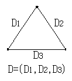
- 증가한다.
- 감소한다.
- 변하지 않는다.
- D2에 반비례하여 감소한다.
(정답률: 62%)
3과목: 전기기기
41. 단상 직권 정류자 전동기의 전기자 권선과 계자권선에 대한 설명으로 틀린 것은?
- 계자권선의 권수를 적게 한다.
- 전기자 권선의 권수를 크게 한다.
- 변압기 기전력을 적게 하여 역률 저하를 방지한다.
- 브러시로 단락되는 코일 중의 단락전류를 많게 한다.
(정답률: 54%)
42. 단상 직권 전동기의 종류가 아닌 것은?
- 직권형
- 아트킨손형
- 보상직권형
- 유도보상직권형
(정답률: 76%)
43. 동기조상기의 여자전류를 줄이면?
- 콘덴서로 작용
- 리액터로 작용
- 진상전류로 됨
- 저항손의 보상
(정답률: 69%)
44. 권선형 유도전동기에서 비례추이에 대한 설명으로 틀린 것은? (단, sm은 최대토크 시 슬립이다.)
- r2를 크게 하면 sm은 커진다.
- r2를 삽입하면 최대토크가 변한다.
- r2를 크게 하면 기동토크도 커진다.
- r2를 크게 하면 기동전류는 감소한다.
(정답률: 70%)
45. 전기자저항 ra=0.2Ω, 동기리액턴스 xs=20Ω인 Y결선의 3상 동기발전기가 있다. 3상 중 1상의 단자전압 V=4400V, 유도기전력 E=6600V이다. 부하각 δ=30°라고 하면 발전기의 출력은 약 몇 kW인가?
- 2178
- 3251
- 4253
- 5532
(정답률: 57%)
46. 반도체 정류기에 적용된 소자 중 첨두 역방향 내전압이 가장 큰 것은?
- 셀렌 정류기
- 실리콘 정류기
- 게르마늄 정류기
- 아산화동 정류기
(정답률: 76%)
47. 동기전동기에서 전기자 반작용을 설명한 것 중 옳은 것은?
- 공급전압보다 앞선 전류는 감자작용을 한다.
- 공급전압보다 뒤진 전류는 감자작용을 한다.
- 공급전압보다 앞선 전류는 교차자화작용을 한다.
- 공급전압보다 뒤진 전류는 교차자화작용을 한다.
(정답률: 64%)
48. 변압기 결선방식 중 3상에서 6상으로 변환할 수 없는 것은?
- 2중 성형
- 환상 결선
- 대각 결선
- 2중 6각 결선
(정답률: 59%)
49. 실리콘 제어정류기(SCR)의 설명 중 틀린 것은?
- PNPN 구조로 되어 있다.
- 인버터 회로에 이용될 수 있다.
- 고속도의 스위치 작용을 할 수 있다.
- 게이트에 (+)와 (-)의 특성을 갖는 펄스를 인가하여 제어한다.
(정답률: 61%)
50. 직류발전기가 90% 부하에서 최대효율이 된다면 이 발전기의 전부하에 있어서 고정손과 부하손의 비는?
- 1.1
- 1.0
- 0.9
- 0.81
(정답률: 71%)
51. 150kVA의 변압기의 철손이 1kW, 전부하동손이 2.5kW이다. 역률 80%에 있어서의 최대효율은 약 몇 %인가?
- 95
- 96
- 97.4
- 98.5
(정답률: 50%)
52. 정격부하에서 역률 0.8(뒤짐)로 운전될 때, 전압 변동률이 12%인 변압기가 있다. 이 변압기에 역률 100%의 정격 부하를 걸고 운전할 때의 전압 변동률은 약 몇 %인가? (단, %저항강하는 %리액턴스강하의 1/12이라고 한다.)
- 0.909
- 1.5
- 6.85
- 16.18
(정답률: 51%)
53. 권선형 유도전동기 저항제어법의 단점 중 틀린 것은?
- 운전 효율이 낮다.
- 부하에 대한 속도 변동이 작다.
- 제어용 저항기는 가격이 비싸다.
- 부하가 적을 때는 광범위한 속도 조정이 곤란하다.
(정답률: 43%)
54. 부하 급변 시 부하각과 부하 속도가 진동하는 난조 현상을 일으키는 원인이 아닌 것은?
- 전기자 회로의 저항이 너무 큰 경우
- 원동기의 토크에 고조파가 포함된 경우
- 원동기의 조속기 감도가 너무 예민한 경우
- 자속의 분포가 기울어져 자속의 크기가 감소한 경우
(정답률: 51%)
55. 단상 변압기 3대를 이용하여 3상 △-Y 결선을 했을 때 1차와 2차 전압의 각변위(위상차)는?
- 0°
- 60°
- 150°
- 180°
(정답률: 56%)
56. 권선형 유도 전동기의 전부하 운전 시 슬립이 4%이고, 2차 정격전압이 150V 이면 2차 유도기전력은 몇 V 인가?
- 9
- 8
- 7
- 6
(정답률: 73%)
57. 3상 유도전동기의 슬립이 s일 때 2차 효율[%]은?(오류 신고가 접수된 문제입니다. 반드시 정답과 해설을 확인하시기 바랍니다.)
- (1-s)×100
- (2-s)×100
- (3-s)×100
- (4-s)×100
(정답률: 69%)
58. 직류전동기의 회전수를 1/2로 하자면 계자자속을 어떻게 해야 하는가?
- 1/4로 감소시킨다.
- 1/2로 감소시킨다.
- 2배로 증가시킨다.
- 4배로 증가시킨다.
(정답률: 61%)
59. 사이리스터 2개를 사용한 단상 전파정류회로에서 직류전압 100V를 얻으려면 PIV가 약 몇 V 인 다이오드를 사용하면 되는가?
- 111
- 141
- 222
- 314
(정답률: 65%)
60. 교류발전기의 고조파 발생을 방지하는 방법으로 틀린 것은?
- 전기자 반작용을 크게 한다.
- 전기자 권선을 단절권으로 감는다.
- 전기자 슬롯을 스큐 슬롯으로 한다.
- 전기자 권선의 결선을 성형으로 한다.
(정답률: 64%)
4과목: 회로이론 및 제어공학
61. 개루프 전달함수 G(s)가 다음과 같이 주어지는 단위 부궤환계가 있다. 단위 계단입력이 주어졌을 때, 정상상태 편차가 0.⑤가 되기 위해서는 K의 값은 얼마인가?
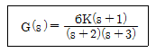
- 19
- 20
- 0.95
- 0.⑤
(정답률: 53%)
62. 제어량의 종류에 따른 분류가 아닌 것은?
- 자동조정
- 서보기구
- 적응제어
- 프로세스제어
(정답률: 53%)
63. 개루프 전달함수
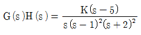
일 때 주어지는 계에서 점근선 교차점은?- -3/2
- -7/4
- 5/3
- -1/5
(정답률: 66%)
64. 단위계단함수의 라플라스변환과 z변환함수는?
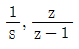
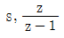
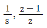
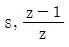
(정답률: 76%)
65. 다음 방정식으로 표시되는 제어계가 있다. 이 계를 상태 방정식
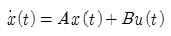
로 나타내면 계수 행렬 A는?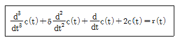
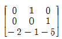
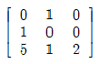
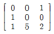
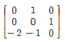
(정답률: 74%)
66. 안정한 제어계에 임펄스 응답을 가했을 때 제어계의 정상상태 출력은?
- 0
- +∞ 또는 -∞
- +의 일정한 값
- -의 일정한 값
(정답률: 57%)
67. 그림과 같은 블록선도에서 C(s)/R(s) 값은?
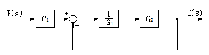
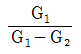
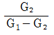
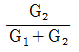
(정답률: 71%)
68. 신호흐름선도에서 전달함수 C/R를 구하면?
(정답률: 78%)
69. 특성방정식이 s3+2s2+Ks+5=0가 안정하기 위한 K의 값은?
- K＞0
- K＜0
- K＞5/2
- K＜5/2
(정답률: 73%)
70. 다음과 같은 진리표를 갖는 회로의 종류는?
- AND
- NOR
- NAND
- EX-OR
(정답률: 74%)
71. 대칭좌표법에서 대칭분을 각 상전압으로 표시한 것 중 틀린 것은?
(정답률: 78%)
72. R-L 직렬회로에서 스위치 S가 1번 위치에 오랫동안 있다가 t=0+에서 위치 2번으로 옮겨진 후, L/R[s] 후에 L에 흐르는 전류[A]는?
- E/R
- 0.5E/R
- 0.368E/R
- 0.632E/R
(정답률: 46%)
73. 분포 정수회로에서 선로정수가 R, L, C, G이고 무왜형 조건이 RC=GL과 같은 관계가 성립될 때 선로의 특성 임피던스 Z0는? (단, 선로의 단위길이당 저항을 R, 인덕턴스를 L, 정전용량을 C, 누설컨덕턴스를 G라 한다.
(정답률: 75%)
74. 그림과 같은 4단자 회로망에서 하이브리드 파라미터 H11은?
(정답률: 49%)
75. 내부저항 0.1Ω인 건전지 10개를 직렬로 접속하고 이것을 한조로 하여 5조 병렬로 접속하면 합성 내부저항은 몇 Ω 인가?
- 5
- 1
- 0.5
- 0.2
(정답률: 67%)
76. 함수 f(t)의 라플라스 변환은 어떤 식으로 정의되는가?
(정답률: 69%)
77. 대칭좌표법에서 불평형률을 나타내는 것은?
(정답률: 71%)
78. 그림의 왜형파를 푸리에의 급수로 전개할 때, 옳은 것은?
- 우수파만 포함한다.
- 기수파만 포함한다.
- 우수파, 기수파 모두 포함한다.
- 푸리에의 급수로 전개 할 수 없다.
(정답률: 62%)
79. 최대값이 Em인 반파 정류 정현파의 실효값은 몇 V인가?
(정답률: 58%)
80. 그림과 같이 R[Ω]의 저항을 Y결선으로 하여 단자의 a, b 및 c에 비대칭 3상 전압을 가할 때, a 단자의 중성점 N에 대한 전압은 약 몇 V 인가? (단, Vab=210V, Vbc=-90-J180V, Vca=-120+J180V)
- 100
- 116
- 121
- 125
(정답률: 29%)
5과목: 전기설비기술기준 및 판단기준
81. 태양전지 모듈의 시설에 대한 설명으로 옳은 것은?
- 충전부분은 노출하여 시설할 것
- 출력배선은 극성별로 확인 가능토록 표시할 것
- 전선은 공칭단면적 1.5mm2 이상의 연동선을 사용할 것
- 전선을 옥내에 시설할 경우에는 애자사용 공사에 준하여 시설할 것
(정답률: 56%)
82. 저압 옥상전선로를 전개된 장소에 시설하는 내용으로 틀린 것은?
- 전선은 절연전선일 것
- 전선은 2.5mm2 이상의 경동선일 것
- 전선과 그 저압 옥상전선로를 시설하는 조영재와의 이격거리는 2m 이상일 것
- 전선은 조영재에 내수성이 있는 애자를 사용하여 지지하고 그 지지점 간의 거리는 15m 이하일 것
(정답률: 39%)
83. 무대, 무대마루 밑, 오캐스트라 박스, 영사실 기타 사람이나 무대 도구가 접촉할 우려가 있는 곳에 시설하는 저압 옥내배선, 전구선 또는 이동전선은 사용전압이 몇 V 미만이어야 하는가?
- 60
- 110
- 220
- 400
(정답률: 63%)
84. 과전류차단기로 시설하는 퓨즈 중 고압전로에 사용하는 포장퓨즈는 정격전류의 몇 배의 전류에 견디어야 하는가?
- 1.1
- 1.25
- 1.3
- 1.6
(정답률: 45%)
85. 터널 안 전선로의 시설방법으로 옳은 것은?
- 저압전선은 지름 2.6mm의 경동선의 절연전선을 사용하였다.
- 고압전선은 절연전선을 사용하여 합성수지관 공사로 하였다.
- 저압전선을 애자사용 공사에 의하여 시설하고 이를 레일면상 또는 노면상 2.2m의 높이로 시설하였다.
- 고압전선을 금속관공사에 의하여 시설하고 이를 레일면상 또는 노면상 2.4m의 높이로 시설하였다.
(정답률: 52%)
86. 저압 옥측전선로에서 목조의 조영물에 시설할 수 있는 공사 방법은?
- 금속관공사
- 버스덕트공사
- 합성수지관공사
- 연피 또는 알루미늄 케이블공사
(정답률: 51%)
87. 특고압을 직접 저압으로 변성하는 변압기를 시설하여서는 아니 되는 변압기는?
- 광산에서 물을 양수하기 위한 양수기용 변압기
- 전기로 등 전류가 큰 전기를 소비하기 위한 변압기
- 교류식 전기철도용 신호회로에 전기를 공급하기 위한 변압기
- 발전소, 변전소, 개폐소 또는 이에 준하는 곳의 소내용 변압기
(정답률: 51%)
88. 케이블 트레이공사에 사용하는 케이블 트레이의 시설기준으로 틀린 것은?
- 케이블 트레이 안전율은 1.3 이상이어야 한다.
- 비금속제 케이블 트레이는 난연성 재료의 것이어야 한다.
- 전선의 피복 등을 손상시킬 돌기 등이 없이 매끈해야 한다.
- 저압옥내배선의 사용전압이 400V 미만인 경우에는 금속제 트레이에 제3종 접지공사를 하여야 한다.
(정답률: 57%)
89. 전로에 대한 설명 중 옳은 것은?
- 통상의 사용 상태에서 전기를 절연한 곳
- 통상의 사용 상태에서 전기를 접지한 곳
- 통상의 사용 상태에서 전기가 통하고 있는 곳
- 통상의 사용 상태에서 전기가 통하고 있지 않은 곳
(정답률: 73%)
90. 최대 사용전압 23kV의 권선으로 중성점접지식 전로(중성선을 가지는 것으로 그 중성선에 다중 접지를 하는 전로)에 접속되는 변압기는 몇 V의 절연내력 시험전압에 견디어야 하는가?
- 21160
- 25300
- 38750
- 34500
(정답률: 64%)
91. 고압 가공전선으로 경동선 또는 내열 동합금선을 사용할 때 그 안전율은 최소 얼마 이상이되는 이도로 시설하여야 하는가?
- 2.0
- 2.2
- 2.5
- 3.3
(정답률: 56%)
92. 제3종 접지공사에 사용되는 접지선의 굵기는 공칭단면적 몇 mm2 이상의 연동선을 사용하여야 하는가?(관련 규정 개정전 문제로 여기서는 기존 정답인 2번을 누르면 정답 처리됩니다. 자세한 내용은 해설을 참고하세요.)
- 0.75
- 2.5
- 6
- 16
(정답률: 53%)
93. 고압 보안공사에서 지지물이 A종 철주인 경우 경간은 몇 m 이하 인가?
- 100
- 150
- 250
- 400
(정답률: 33%)
94. 가공 직류 전차선의 레일면상의 높이는 4.8m 이상이어야 하나 광산 기타의 갱도 안의 윗면에 시설하는 경우는 몇 m 이상이어야 하는가?(관련 규정 개정전 문제로 여기서는 기존 정답인 1번을 누르면 정답 처리됩니다. 자세한 내용은 해설을 참고하세요.)
- 1.8
- 2
- 2.2
- 2.4
(정답률: 48%)
95. 가공전선로 지지물의 승탑 및 승주방지를 위한 발판 볼트는 지표상 몇 m 미만에 시설 하여서는 아니 되는가?
- 1.2
- 1.5
- 1.8
- 2.0
(정답률: 70%)
96. 저압 옥내간선에서 분기하여 전기사용 기계기구에 이르는 저압 옥내전로는 분기점에서 전선의 길이가 몇 m 이하인 곳에 개폐기 및 과전류차단기를 시설하여야 하는가?
- 2
- 3
- 4
- 5
(정답률: 49%)
97. 사용전압이 60kV 이하인 경우 전화선로의 길이 12km 마다 유도전류는 몇 ㎂를 넘지 않도록 하여야 하는가?(오류 신고가 접수된 문제입니다. 반드시 정답과 해설을 확인하시기 바랍니다.)
- 1
- 2
- 3
- 5
(정답률: 61%)
98. 발전소, 변전소, 개폐소 또는 이에 준하는 곳에서 개폐기 또는 차단기에 사용하는 압축공기장치의 공기압축기는 최고 사용압력의 1.5배의 수압을 연속하여 몇 분간 가하여 시험을 하였을 때에 이에 견디고 또한 새지 아니하여야 하는가?
- 5
- 10
- 15
- 20
(정답률: 72%)
99. 금속덕트 공사에 의한 저압 옥내배선공사 시설에 대한 설명으로 틀린 것은?
- 저압 옥내배선의 사용전압이 400V 미만인 경우에는 덕트에 제3종 접지공사를 한다.
- 금속덕트는 두께 1.0mm 이상인 철판으로 제작하고 덕트 상호간에 완전하게 접속한다.
- 덕트를 조영재에 붙이는 경우 덕트 지지점간의 거리를 3m 이하로 견고하게 붙인다.
- 금속덕트에 넣은 전선의 단면적의 합계가 덕트의 내부 단면적의 20% 이하가 되도록 한다.
(정답률: 41%)
100. 그림은 전력선 반송통신용 결합장치의 보안장치를 나타낸 것이다. S의 명칭으로 옳은 것은?
- 동축 케이블
- 결합 콘덴서
- 접지용 개폐기
- 구상용 방전갭
(정답률: 63%)